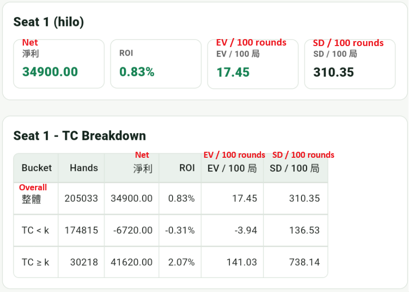
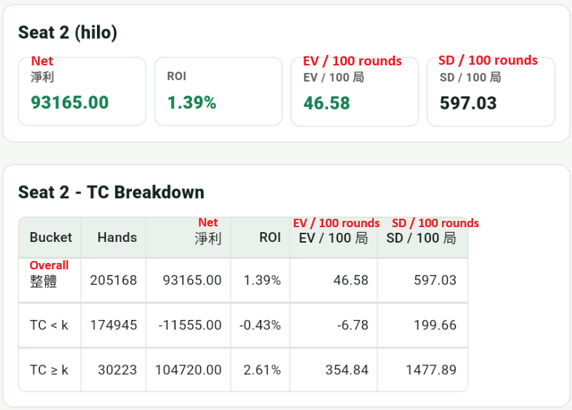

Bet Ramp
The practical value of counting usually comes from betting more when TC is high. A bet ramp is the rule that converts true count into bet size.
| TC | Bet Units | Meaning |
|---|---|---|
| ≤ 0 | 1 | Usually no edge |
| +1 | 2 | A small edge begins |
| +2 | 4 | The edge is clearer |
| +3 | 6 | High-card density is strong |
| ≥ +4 | 8 | Strong edge, but still high variance |
This is only a teaching example. Real bet sizing is strongly affected by bankroll, table limits, rules, shoe penetration, and risk tolerance.
App Simulation Stats
The result below uses Hi-Lo and different Bet Ramps over 200,000 rounds to compare how larger betting levels change EV and variance.


Seat 2, with the larger Bet Ramp, has higher overall expectation and clearly higher EV / 100 rounds. But SD / 100 rounds also rises, meaning larger bets amplify the edge and short-term swings at the same time.
Kelly Intuition
Kelly is about the relationship between bet size, edge, and variance. A larger edge allows larger bets, but high variance still requires caution.